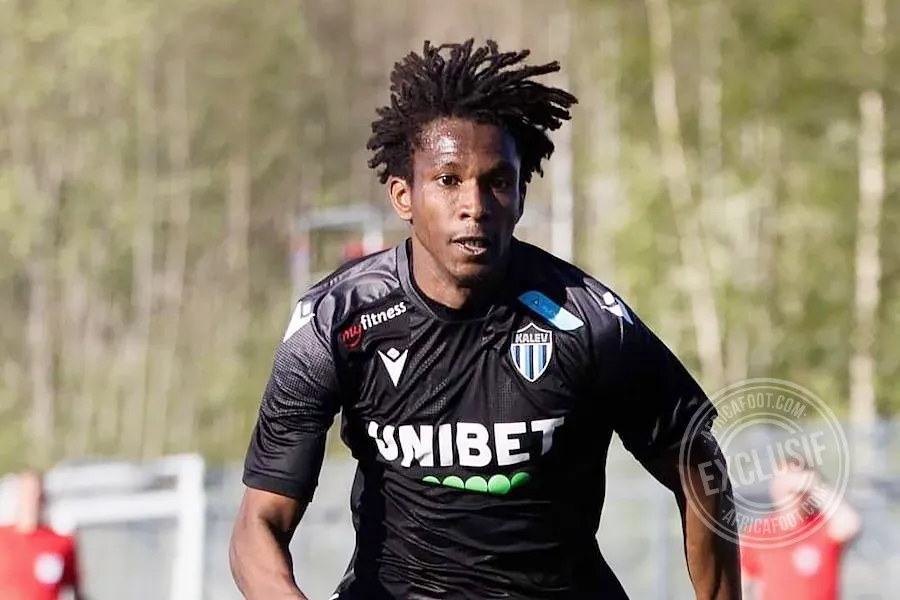
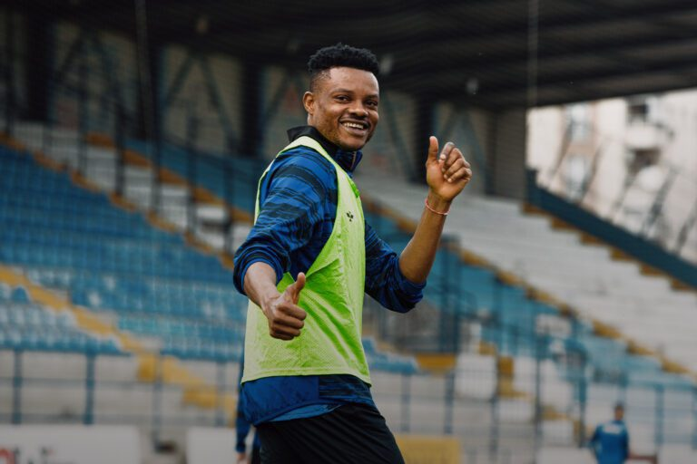
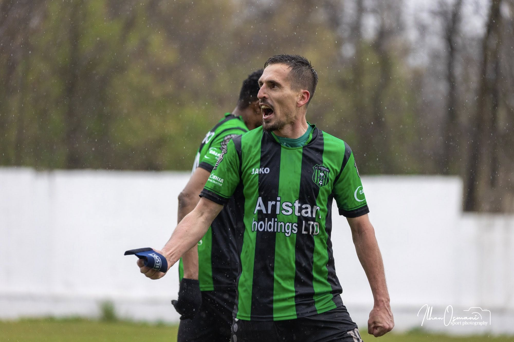

K.F. Bashkimi 1947 është një klub futbolli nga Kumanova, Maqedonia e Veriut. Klubi u themelua në vitin 1947 dhe ka një histori të pasur në futbollin maqedonas. Bashkimi ka fituar disa tituj kampionë dhe kupa kombëtare gjatë viteve, duke u bërë një nga klubet më të suksesshme në vend. Klubi është i njohur për tifozët e tij të zjarrtë dhe për kontributin e tij në zhvillimin e futbollit në rajonin e Kumanovës.
Klubi Futbollistik Bashkimi 1947 Kumanovë është një nga emrat më tradicionalë dhe më të rëndësishëm të futbollit shqiptar në Maqedoninë e Veriut. Me një histori të mbushur me sfida, ngritje të lavdishme, rënie dramatike dhe një ringjallje të fuqishme, ky klub përfaqëson më shumë se thjesht një ekip sportiv—ai është një simbol i identitetit dhe bashkimit për qytetin e Kumanovës.
Klubi u themelua në vitin 1947 në Kumanovë. Emri "Bashkimi" u zgjodh pikërisht për të simbolizuar unitetin dhe vullnetin e popullatës shqiptare të asaj zone për të kultivuar sportin nën një emblemë të përbashkët. Për dekada med radhë gjatë periudhës së ish-Jugosllavisë, klubi garoi në ligat rajonale dhe lokale, duke u përballur me sfida të shumta infrastrukturore dhe politike, bur duke mbetur gjithmonë një vatër e rëndësishme e talentit vendor.
Kthesa e madhe historike erdhi në fillim të viteve 2000, kur Bashkimi arriti të shkruante faqet më të lavdishme të historisë së tij:
Pas disa viteve të suksesshme në Ligën e Parë, klubi u përfshi nga një krizë e rëndë financiare dhe organizative. Për shkak të mungesës së sponsorizimit dhe borxheve të akumuluara, pikërisht përpara fillimit të sezonit 2008/09, kryesia u detyrua ta tërhiqte ekipin nga garat. Ky vendim solli shpërbërjen e klubit origjinal, duke lënë një zbrazëti të madhe te tifozët e zjarrtë kumanovarë, të njohur si "Ilirët".
Dashuria për klubin nuk u zbeh. Në vitin 2011, me iniciativën e sportistëve, veteranëve dhe dashamirëve të futbollit në Kumanovë, klubi u ri-themelua nën emrin e modifikuar KF Bashkimi 1947.
Ndonëse juridikisht nga Federata e Futbollit e Maqedonisë së Veriut rekordet e vjetra mbahen të ndara, për çdo tifoz dhe qytetar, ky ekip është pasardhësi legjitim dhe i vetëm shpirtëror i klubit të vitit 1947.

Mesfushor
8
Sulmues
80
Mesfushor
10
Burak Hida

Armend Destani
Durim Hida
| Data | Ndeshja | Rezultati | Ora |
|---|---|---|---|
| 10.05.2026 | Arsimi vs Bashkimi | 1-1 | 16:00 |
| 16.05.2026 | Bashkimi vs Makedonija GP | 3-3 | 16:00 |
| 24.05.2026 | Pelister vs Bashkimi | 1-0 | 16:30 |
| Renditja | Logo | Klubet | NL | F | B | H | Golat | Dallimi | Pikët |
|---|---|---|---|---|---|---|---|---|---|
| 1 | Vardar | 33 | 26 | 5 | 2 | 80:21 | 59 | 83 | |
| 2 | Shkendija | 33 | 23 | 5 | 5 | 67:30 | 37 | 74 | |
| 3 | Struga | 33 | 19 | 5 | 9 | 68:28 | 40 | 62 | |
| 4 | Sileks | 33 | 16 | 5 | 12 | 59:36 | 23 | 53 | |
| 5 | Tikves | 33 | 14 | 6 | 13 | 59:47 | 12 | 48 | |
| 6 | Arsimi | 33 | 13 | 7 | 13 | 50:53 | -3 | 46 | |
| 7 | Bashkimi | 33 | 11 | 9 | 13 | 40:54 | -14 | 42 | |
| 8 | Pelister | 33 | 10 | 10 | 13 | 41:42 | -1 | 40 | |
| 9 | Brera Strumica | 33 | 10 | 10 | 13 | 46:56 | -10 | 40 | |
| 10 | Makedonija GP | 33 | 9 | 7 | 17 | 42:57 | -15 | 34 | |
| 11 | Rabotnicki | 33 | 9 | 6 | 18 | 45:58 | -13 | 33 | |
| 12 | Shkupi | 33 | 0 | 1 | 32 | 15:130 | -115 | 1 |
Adresa: Stadiumi Bashkimi Arena, Kumanovë, Maqedonia e Veriut.
E-mail: bashkimi.kumanove@gmail.com
Telefoni: +389 75 223 161